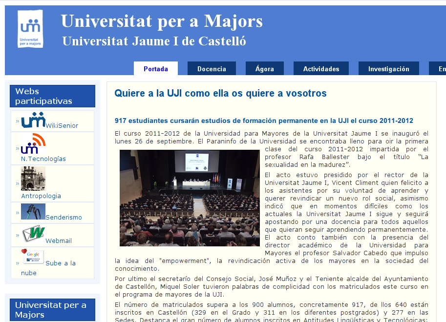
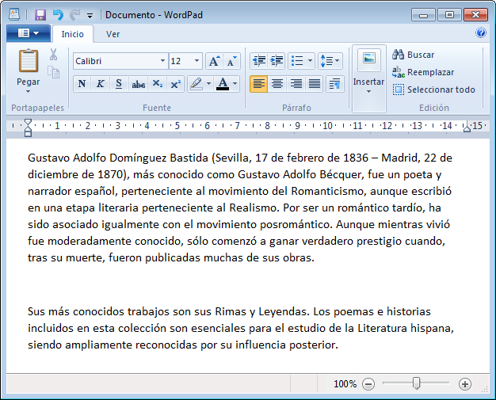

Sesión 6: Práctica.
1. Firmar la asistencia a la clase
Vamos a firmar la asistencia a clase. Sigue estos pasos:
- Abre un navegador web.
- Accede a la página http://mayores.uji.es.
- Ves a la sección "Docencia", y en esa página busca el enlace a "Gestión de firmas" que encontraras en la parte inferior de la columna lateral izquierda.
- Verás que te solicita tu usuario/contraseña de la UJI, ya que firmar la asistencia es una acción específica de cada uno de nosotros/as.
- Si finalmente has conseguido llegar hasta aquí, apreta el botón de "Firmar asistencia".
3. Abrir el Wordpad.
Repasemos la apertura y uso del programa WordPad.

- Abre Wordpad utilizando el Menú Inicio.
4. Introduciendo texto
Escribiendo con el teclado (no vale copiar/pegar), introduce los siguientes dos párrafos en tu nuevo documento para que quede como la imagen.
Gustavo Adolfo Domínguez Bastida (Sevilla, 17 de febrero de 1836 – Madrid, 22 de diciembre de 1870), más conocido como Gustavo Adolfo Bécquer, fue un poeta y narrador español, perteneciente al movimiento del Romanticismo, aunque escribió en una etapa literaria perteneciente al Realismo. Por ser un romántico tardío, ha sido asociado igualmente con el movimiento posromántico. Aunque mientras vivió fue moderadamente conocido, sólo comenzó a ganar verdadero prestigio cuando, tras su muerte, fueron publicadas muchas de sus obras.
Sus más conocidos trabajos son sus Rimas y Leyendas. Los poemas e historias incluidos en esta colección son esenciales para el estudio de la Literatura hispana, siendo ampliamente reconocidas por su influencia posterior.
5. Navegación web
Si has terminado todos los ejercicios anteriores, enhorabuena, ya manejas el teclado con soltura. Puedes ponerte a navegar por algunas de tus páginas favoritas.